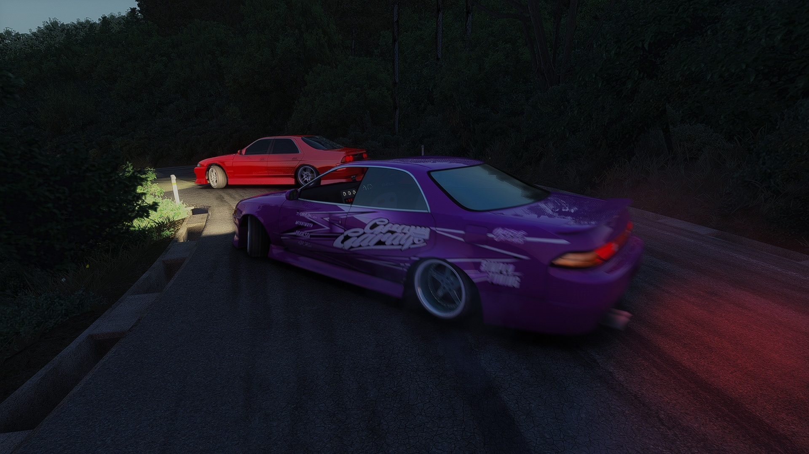
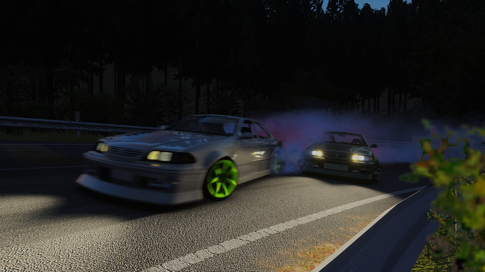

PCVRをもっと快適に！『Assetto Corsa』の没入感を極限まで高める必須Modと設定ガイド
公開日: 2026年5月25日 | カテゴリ: VR / レースシム
すべてはここから：「Content Manager」の導入
前回の記事で、VRレースシムにおける「VR酔い」の克服について触れました。酔いを克服した次に行うべきは、ゲーム自体のポテンシャルを引き出すことです。『Assetto Corsa』をバニラのまま遊ぶのは非常にもったいないです。PCVRユーザーにとって必須なのが「Content Manager（CM）」です。軽量で動作が速く、VR起動モードの切り替えもワンクリックで行えます。

グラフィックを次世代機レベルに：「Custom Shaders Patch (CSP)」
CMを導入したら、次に入れるべきなのがCSPです。これを導入することで、昼夜の概念、天候の変化、そして何よりも「光の反射」が信じられないほどリアルになります。
10Nmクラスの強力なトルクを発揮するダイレクトドライブのホイールベースから伝わる路面情報と、VRヘッドセット越しに見るリアルな光の反射が合わさることで、現実のドライブそのものの体験が得られます。

VR環境でフレームレート(FPS)を安定させる設定のコツ
VRにおいてフレームレートの低下は「VR酔い」に直結します。最もGPUリソースを消費する「影の設定（Shadows）」は一段階下げ、不自然に見えがちな過度なPost-Processing（ポストプロセス）は最低限に抑えましょう。これにより、高画質と安定したFPSの両立が十分に可能です。